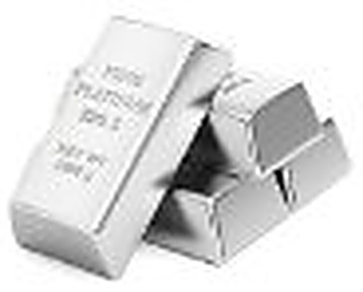

Metal 01
Platinum
- Symbol
- Pt
- Pros
- A noble, rare and natural white metal which is super durable and will not tarnish.
- Cons
- Very easy to scratch or leave markings on a jewelry item made using platinum due to its soft nature.
- Alloyed with
- Ruthenium, rhodium, palladium, osmium and iridium to make it even more durable.
- Purity of jewelry
- PT900 (90% pure platinum)
PT950 (95% pure platinum) - Jewelry metal colors available
- White
- To summarize
- Platinum is a prestigious selection, often chosen for its sophisticated appeal and popularity among the rich and famous.